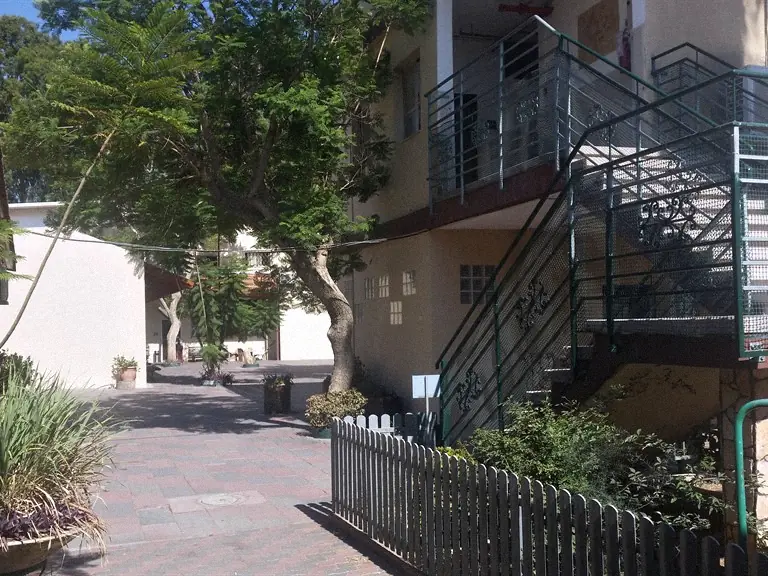

כמעט 70 שנה של בית.
נווה האירוס נפתח בשנת 1957.
בשנת 2021 נבנה אגף חדש.
היום יש לנו שלושה בתים.
-
1957 — סנטוריום נס ציונה
אבן הפינה מונחת במקום שיהפוך לנווה האירוס.

-
2021 — אגף חדש, ובו שמיים
חדרים חדשים, מרחבים משותפים ותאורת „שמיים” בתקרה — אגף שתוכנן במיוחד לצורכי הדיירים.
-
היום — שלושה בתים
במעון, בבתים בקהילה ובמסגרת לצעירים על הרצף האוטיסטי — יותר מ־100 דיירים ודיירות. יותר מ־25,000 בקרים מאז 1957.